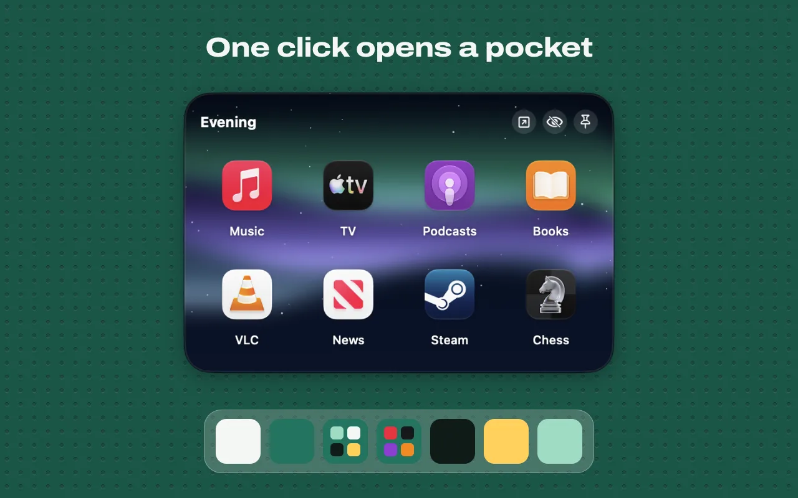
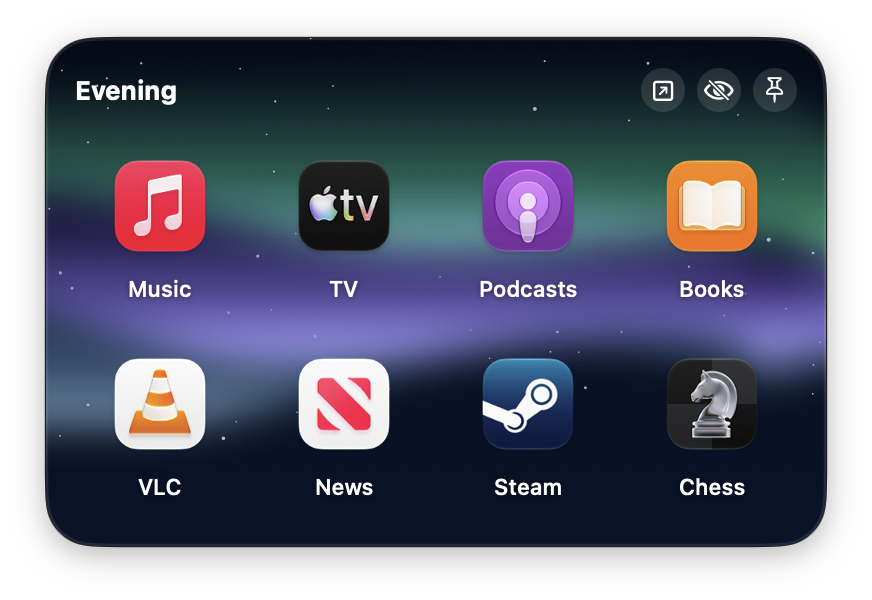
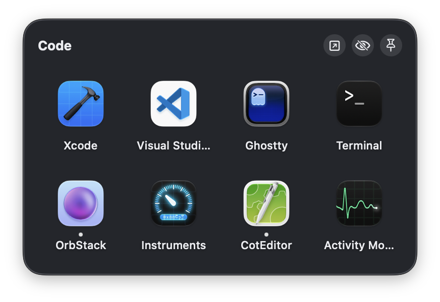
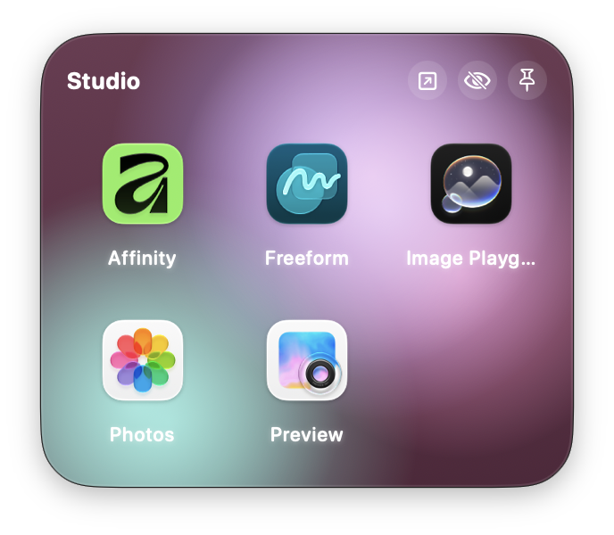
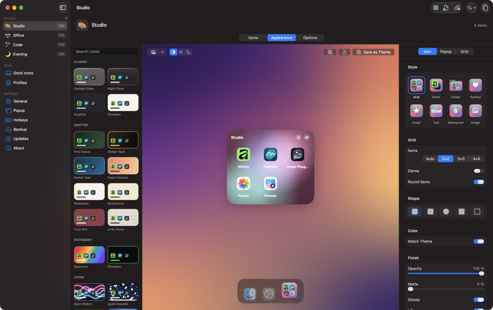
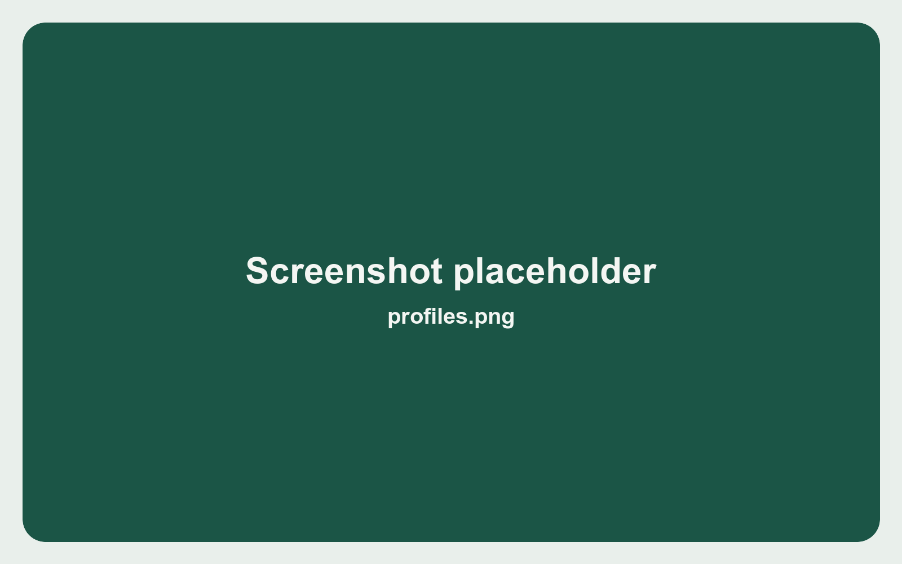
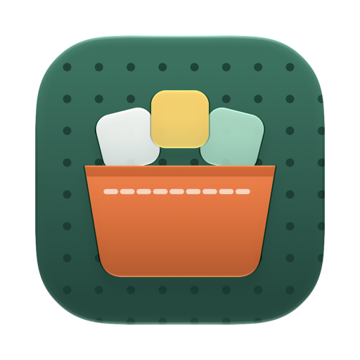

Pocketwerk in Aktion

Ein Dock-Symbol, eine ganze Gruppe
Fasse die Apps, Dateien, Ordner und Links, die du zusammen nutzt, in einem Pocket zusammen. Gib ihm ein Dock-Symbol. Ein Klick öffnet es, ein zweiter schließt es wieder. In der App heißen Pockets „Gruppen“.
- Öffnet sich, wo du klickst
- Das Popup erscheint direkt über dem Dock-Symbol des Pockets. Zeig es als Raster, Liste oder Kacheln; es passt sich dem Inhalt an und blättert durch den Rest. Liegen mehrere Pockets in einem Popup, wechselt eine Seitenleiste zwischen ihnen.
- Apps, Dateien, Ordner, Links
- Ordner öffnen sich im Popup. Mit der Leertaste startest du Quick Look. Zieh Einträge hinein und wieder heraus, wohin du sie brauchst.
- Die ganze Gruppe auf einmal
- Alle öffnen, Alle ausblenden oder Alle beenden für ein Pocket. ⌥-Klick beendet eine einzelne App, mit ⌘-Klick wählst du mehrere aus und öffnest sie zusammen.
- Pockets, die sich selbst füllen
- Intelligente Pockets zeigen deine Apps unter Meistgenutzt, Zuletzt geöffnet und Laufende Apps.
Probier es aus: ein Beispiel-Pocket.
- EditorApp
- BrowserApp
- TerminalApp
- SkizzenbuchApp
- ProjektOrdner
- Briefing.pdfDatei
- Team-WikiLink
- MusikApp
- KalenderApp
Klick auf einen Eintrag, nutze die Pfeiltasten oder klick auf das Dock-Symbol des Pockets.
Beispiel-Pocket, für diese Seite gezeichnet. Tasten: Pfeile, Return, Leertaste, Tippen zum Suchen, ⌘-Klick, ⌥-Klick.
Drei Pockets aus der App



Screenshots aus Pocketwerk mit Demo-Pockets, die App ist darin auf Englisch eingestellt. Jedes Pocket öffnet sich über seinem eigenen Dock-Symbol.
Gib jedem Pocket sein eigenes Aussehen
Das Design Studio gestaltet jedes Popup mit Liquid Glass, Farben, Verläufen, Fotos, deinem unscharfen Schreibtischbild, Texturen oder animierten Hintergründen, die auf den Zeiger reagieren. Du stellst Rahmen, Schriften und Eckenradius ein. Starte mit Dutzenden eingebauten Themes und Presets und sichere danach deine eigenen.

Dazu ein passendes Symbol
Das Dock-Symbol des Pockets kann ein Mini-Raster der enthaltenen Apps zeigen, einen gefächerten Stack, eine Ordnerform, ein Symbol aus den SF-Symbols-Paketen, ein Emoji, ein Wort oder dein eigenes Bild.
- Mini-Raster
- Stack
- Ordner
- Symbol
- Emoji
- Text
- Bild
Ein anderes Dock für jede Art von Arbeit
Sichere das gesamte macOS-Dock als Profil. Wechsle per Tastenkürzel, über die Menüleiste, die Befehlszeile oder eine URL. Ein Profil kann auch deinem Space oder Bildschirm folgen und sich von selbst umschalten. Pocketwerk kann beim Wechsel Apps beenden und starten, und eigene Abstandshalter halten lange Docks übersichtlich.
Beispielprofile und Tastenkürzel. Deine legst du selbst an.
- Tastenkürzel
- Menüleiste
- Befehlszeile
- URL
- Kurzbefehle und Siri
- Space oder Bildschirm

Schnell per Tastatur
- ⌘123456789Zu einem Pocket springen
- ← →ReturnBewegen und öffnen
- LeertasteQuick Look
- a b cTippen, um im Pocket zu suchen
- Wischen oder scrollen zum nächsten Pocket
Und der Rest des Werkzeugkastens
- Globale Tastenkürzel für jedes Pocket und jedes Profil. Keine Berechtigung für Bedienungshilfen nötig.
- Menüleisten-Modus, falls du Pocketwerk lieber aus dem Dock heraushalten willst.
- Eine Leader-Taste: erst ein Tastenkürzel, dann ein Buchstabe öffnet ein Pocket oder wendet ein Profil an.
- Eine aktive Ecke, die deine Pockets öffnet, wenn der Zeiger dort verweilt.
- Kurzbefehle und Siri-Aktionen, um ein Pocket zu zeigen, zu öffnen, auszublenden oder zu beenden und um ein Profil anzuwenden.
- Beim Anmelden starten, dazu Varianten des App-Symbols für Pocketwerk selbst.
- Deutsch und Englisch.
Neu in 1.1: der Assistent
Beschreibe eine Änderung in einem einfachen Satz, und der Assistent auf deinem Mac passt das Pocket an. Jede Änderung wird aufgelistet und lässt sich widerrufen. Er läuft mit Apple Intelligence auf unterstützten Macs ab macOS 26.
App-Vorschläge zeigen Apps, die zu einem Pocket passen. Sie werden auf deinem Mac aus dem Namen des Pockets und den Apps darin berechnet.
Es bleibt auf deinem Mac
Es gibt keinen Account, kein Tracking und keine Analyse. Deine Pockets liegen in einer JSON-Datei auf deinem Mac.
Pocketwerk geht nur für zwei Dinge online: eine tägliche Update-Prüfung und die kleinen Symbole (Favicons) deiner Links. Auch diese Website setzt keine Cookies.
Pocketwerk installieren
macOS 26 Tahoe oder neuer. Apple Silicon und Intel.
-
Hol dir die App
Lade das DMG von GitHub Releases herunter und zieh Pocketwerk in den Ordner „Programme“. Oder installiere es mit Homebrew.
Download für Macbrew install --cask digitaliq/tap/pocketwerk -
Öffne sie einmal
Pocketwerk ist nicht von Apple notarisiert, deshalb blockiert macOS den ersten Start. Schließe die Meldung.
-
Erlaube sie in den Systemeinstellungen
Öffne die Systemeinstellungen, geh zu Datenschutz & Sicherheit, scrolle nach unten und klicke neben Pocketwerk auf „Trotzdem öffnen“. Bestätige, und ab dann öffnet sie sich wie jede andere App.
Datenschutz & Sicherheit, als Illustration.

Fragen
Ist Pocketwerk wirklich kostenlos?
Ja. Es ist kostenlos und Open Source unter der MIT-Lizenz. Es gibt keinen Account und nichts zu kaufen.
Warum blockiert macOS den ersten Start?
Pocketwerk ist nicht von Apple notarisiert. macOS stoppt den ersten Start solcher Apps. Klick einmal in den Systemeinstellungen unter Datenschutz & Sicherheit auf „Trotzdem öffnen“, danach startet es normal.
Was unterscheidet ein Pocket von einem Ordner im Dock?
Ein Dock-Ordner zeigt die Dateien eines einzelnen Finder-Ordners. Ein Pocket mischt Apps, Dateien, Ordner und Links, hat ein eigenes Dock-Symbol und einen eigenen Look und kann alle seine Apps auf einmal öffnen, ausblenden oder beenden.
Braucht Pocketwerk die Berechtigung für Bedienungshilfen?
Für die Tastenkürzel nicht. Globale Tastenkürzel für Pockets und Profile funktionieren ohne sie.
Was verlässt meinen Mac?
Eine tägliche Update-Prüfung und Abfragen nach den Favicons deiner Links. Sonst nichts. Deine Pockets liegen in einer JSON-Datei auf deinem Mac.
Auf welchen Macs läuft es?
Auf Macs mit macOS 26 Tahoe oder neuer, mit Apple Silicon und mit Intel.
Welche Sprachen spricht es?
Deutsch und Englisch.
Wo ist der Quellcode?
Den vollständigen Quellcode gibt es auf GitHub unter github.com/DigitalIQ/pocketwerk.